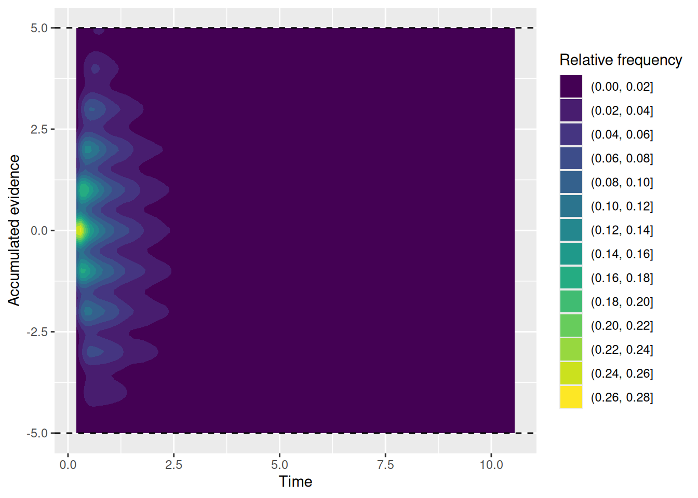

3 Building a random walk model to simulate choice and RT
You are in a bind. There are two piles of hay in front of you. They look pretty similar in size. You are hungry. Which of the two piles do you walk toward? I should also mention that you are a donkey, so this is pretty important to you! (The deliberating donkey shown above, Simon, is the resident donkey at Indian Ladder Farms near Albany, NY.)
The situation described above is a version of the parable of Buridan’s ass. In the parable, the unfortunate ass is unable to come to a decision because the two piles of hay are equally large, meaning he has no basis for choosing between them. As a result, the donkey starves to death.
In this chapter, we will build a model of two-choice behavior that rescues Buridan’s donkey from this dire fate. This model is called a random walk. As we will see, this model can be applied to any situation involving a choice between two options. The random walk model instantiates all four of the key constructs described in the Introduction. It is also a great example of the general structure of a computational cognitive model, in that it describes how an observable action (a choice) arises by applying a process of accumulation to a representation of the balance of evidence between the two options.
3.1 Out for a random walk
3.1.1 Representing the current state of evidence
The random walk model assumes that, at any given time, a decision maker represents the current balance of evidence between two options as a number. We will creatively refer to this representation as \(x(t)\), where \(x\) stands for evidence and \((t)\) stands for the fact that it is the evidence at a specific time \(t\). The sign and magnitude of \(x(t)\) represents the extent to which the current value of evidence favors one option over the other.
If \(x(t)\) equals zero, then the evidence at time \(t\) does not favor either option. This is akin to the situation when Buridan’s ass first encounters the two piles of hay. If \(x(t) > 0\), then the evidence favors one of the two options. For Buridan’s ass, perhaps positive values of evidence represent evidence in favor of going toward the pile of hay on the right. If \(x(t) < 0\), then the evidence favors the other option. For Buridan’s ass, maybe negative values of evidence represent evidence in favor of going toward the pile of hay on the left. Notice that we could just as easily do it the other way around: positive evidence favors going left while negative evidence favors going right. The important thing is just that the two options are associated with opposite signs of evidence.
In a cognitive task, the two choices might be “word” and “non-word” in a lexical decision task, “old” and “new” in a recognition memory task, “present” and “absent” in a visual search task, “same” and “different” in a change detection task, “category A” and “category B” in a categorization task, etc. Again, the point is that, at any given time, the degree to which the decision maker’s accumulated evidence at time \(t\) favors one option or the other is represented by the value of a number \(x(t)\), with each option associated with opposite signs.
3.1.2 Accumulating evidence
The value of \(x(t)\) represents the evidence that has been accumulated by time \(t\). But what does it mean to “accumulate” evidence? And what is the “evidence” that is accumulated?
In a random walk model, we assume that at regular time intervals (each interval has duration \(Delta t\)), the decision maker receives a “sample” of evidence, which we will label \(\Delta x(t)\). This sample can take one of two values, \(+1\) or \(-1\). If it is \(+1\), the sample favors the option associated with positive evidence values (e.g., the pile of hay on the right) and if it is \(-1\), the sample favors the option associated with negative evidence values (e.g., the pile of hay on the left). To accumulate evidence means to add the new sample \(\Delta x(t)\) to the current value of the accumulated evidence, i.e.: \[ \overbrace{x(t + \Delta t)}^{\text{Updated evidence}} = \overbrace{x(t)}^{\text{Current accumulated evidence}} + \overbrace{\Delta x(t)}^{\text{Current sample of evidence}} \] Thus, the accumulated evidence \(x(t)\) is the sum of all the samples of evidence that were obtained by time \(t\).
3.1.3 What is evidence?
At this point, it would be reasonable to ask where these samples of evidence come from. There is no single answer to this question because the random walk model, like most of the models of choice and RT we will consider, treats evidence in a very abstract sense. To return to Buridan’s ass, the evidence might be perceptual in nature: For an interval of time, the donkey looks at both piles of hay. Even though both piles are, by assumption, equally big, that may not always be visually apparent. During any finite interval of time, one pile might happen to look ever so slightly larger than the other, perhaps due to a quirk of the light, a sheaf fluttering in the breeze, the donkey’s visual acuity, etc. If the pile on the right happened to look a bit bigger than the one on the left during one of those intervals, then the sample of evidence for that interval would be \(+1\). Otherwise, it would be \(-1\). Because these minute differences are due to essentially chance factors, and they are equally likely to favor either pile, we can say that the probability of getting a sample that is either \(+1\) or \(-1\) is \(0.5\). While the evidence might not favor one pile over the other in the long run, it will favor one option over a finite interval of time, which is all any real decision maker has at their disposal. As we shall see shortly, this is the key to saving Buridan’s ass.
Treating evidence as due, at least in part, to chance factors is why this model is called a “random” walk. It also highlights the fact that the evidence samples need not occur with equal frequency. Perhaps samples come up \(+1\) with probability \(p\) and otherwise come up \(-1\), like the proverbial biased coin flip. If the evidence consistently favors one option, that means that \(p\) is close to either 1 or 0. To the extent that chance factors influence the evidence, \(p\) will be closer to \(0.5\). We have now been introduced to the first parameter of the random walk model: \(p\), the probability of getting a sample of evidence that favors the option associated with positive evidence.
The figure below illustrates different ways that evidence might accumulate over time. Each step up or down is driven by the sample of evidence that was obtained at that time, which is assumed to be random with probability \(p\). The figure also illustrates why this model is called a random “walk”, because each trajectory kind of looks like a path that someone might have walked.
Code
expand_grid(p = c(0.2, 0.5, 0.8), sim_index = 1:5, t = 1:20) %>%
mutate(x_sample = 2 * rbinom(n = n(), size = 1, prob = p) - 1) %>%
group_by(p, sim_index) %>%
mutate(x_accum = cumsum(x_sample)) %>%
ggplot(aes(x = t, y = x_accum, color = factor(p), group = interaction(p, sim_index))) +
geom_hline(yintercept = 0, linetype = "dashed") +
geom_step(alpha = 0.5) +
labs(x = "Time interval", y = "Accumulated evidence", color = "p")What about evidence in cognitive tasks? Buridan’s ass relies on the same kind of sensory evidence as one needs to do, for example, psychophysical tasks like picking which stimulus is brighter, more leftward-oriented, etc. Evidence derived from memory can also be noisy—perhaps when retrieving an event, you sometimes recall the color of an object as blue and sometimes as green. When deciding between different gambles or products, we may also shift attention to different features of those options, leading us to judge them as better or worse depending on which features we attend to (Busemeyer & Townsend, 1993).
3.1.4 Doing some code
Having now familiarized ourselves with how the random walk model represents a decision maker’s evidence and how it processes that evidence via accumulation, let’s see how we would write that model in code. Specifically, we will be writing code that simulates different possible random walks. The way we will do this is more of an intellectual exercise, since we will not be striving for efficiency (later on, we will use special-purposes R packages for that). Rather, the point here is to see how the conceptual aspects of a model can be implemented in code. We will add on to this code as we go.
For now, we know that we will have a line that looks something like the accumulation equation above:
Code
x <- x + x_sampleHere, x stands for the value of the accumulated evidence and x_sample stands for the current sample of evidence (which is either 1 or -1). The <- evaluates the expression on the right and assigns it to the thing on the left, so the code above says “take the current value of x, add the new sample x_sample, and put it back as the new value of x”.
With the code above as the core of the model, we now need to do three things: first, specify how to get x_sample; second, obtain many such samples; third, keep a record of how the accumulated evidence changes over time.
3.1.4.1 Sampling evidence
To get a value for x_sample, we will use R’s rbinom function, which generates a random sample from a binomial distribution. Specifically, the line rbinom(n = 1, size = 1, prob = 0.5) will generate a sample that equals 1 with probability 0.5, otherwise it equals zero. It is perhaps easiest to think of it in terms of a coin flip: The n parameter of the rbinom function says how many samples to draw, size says how many coins we flip at once, and prob is the probability that any single flip comes up heads. The number that rbinom gives is the number of heads per sample.
For Buridan’s ass, the sample of evidence favors each pile equally often, so prob = 0.5 makes sense. Note that because rbinom returns either a 0 or a 1, we need to do some math to turn the result into \(+1\) or \(-1\). This is shown below.
Code
x_sample <- 2 * rbinom(n = 1, size = 1, prob = 0.5) - 1
x <- x + x_sample3.1.4.2 Obtaining many samples
There are a few ways we can write code that will obtain many samples. To anticipate what we will be doing later, we will use the while control structure. We can use it to specify a condition such that, so long as the condition is met, a block of code will continue to be executed in a loop.
Our condition will depend on the current time. Remember that, in the random walk, each sample of evidence arrives at fixed intervals of time. We will therefore need to keep track of the current time as well as the accumulated evidence. Similar to how we updated the evidence, we will need to keep track of t, the current time. We will also need to specify dt, the duration of each interval, and t_max, the amount of time to keep accumulating evidence.
Code
t_max <- 5
dt <- 0.05
while (t < t_max) {
x_sample <- 2 * rbinom(n = 1, size = 1, prob = 0.5) - 1
x <- x + x_sample
t <- t + dt
}Notice that we specified values for t_max and dt outside the while loop. We can specify initial values for x and t the same way:
Code
t_max <- 5
dt <- 0.05
x <- 0
t <- 0
while (t < t_max) {
x_sample <- 2 * rbinom(n = 1, size = 1, prob = 0.5) - 1
x <- x + x_sample
t <- t + dt
}3.1.4.3 Keeping a record
The chunk of code above will work just fine! But unfortunately it does not leave a record of accumulated evidence over time that we can then examine, like we did with the graph above. In the chunk below, we use a fun trick to keep a record of each value of x and t: We create two vectors x_record and t_record and use the c function to append the current values of x and t to these vectors:
Code
t_max <- 5
dt <- 0.05
x <- 0
t <- 0
x_record <- x
t_record <- t
while (t < t_max) {
x_sample <- 2 * rbinom(n = 1, size = 1, prob = 0.5) - 1
x <- x + x_sample
t <- t + dt
x_record <- c(x_record, x)
t_record <- c(t_record, t)
}3.1.4.4 Visualizing the record
Now that we are keeping a record of evidence over time, let’s visualize it! The code below uses base R for that purpose, although the graph above uses ggplot2 which we will use again later. The type = "s" setting in the plot function at the end give the “step-like” plot.
Code
t_max <- 5
dt <- 0.05
x <- 0
t <- 0
x_record <- x
t_record <- t
while (t < t_max) {
x_sample <- 2 * rbinom(n = 1, size = 1, prob = 0.5) - 1
x <- x + x_sample
t <- t + dt
x_record <- c(x_record, x)
t_record <- c(t_record, t)
}
plot(t_record, x_record, type = "s", xlab = "Time", ylab = "Accumulated evidence")Try copy-pasting the code above and running it yourself a few times to see what it looks like!
3.1.4.5 Making a function
If we have a chunk of code that we want to re-run many times, we would do better to write a function that we can call instead of having to re-run the whole chunk. Writing a function also makes it easier to deal with parameters that can have different settings, like dt and t_max. We will also make the probability \(p\) a parameter too. Finally, the values for these three parameters in the function line are defaults.
Code
rw_sim <- function(p = 0.5, dt = 0.05, t_max = 5) {
x <- 0
t <- 0
x_record <- x
t_record <- t
while (t < t_max) {
x_sample <- 2 * rbinom(n = 1, size = 1, prob = p) - 1
x <- x + x_sample
t <- t + dt
x_record <- c(x_record, x)
t_record <- c(t_record, t)
}
return(data.frame(t = t_record, x = x_record))
}Now we can call the function rw_sim with different settings to simulate different random walks. Note that, because the function returns t_record and x_record as different columns of a data.frame, we can easily use ggplot2 to plot the results, as in the examples below.
Code
sim_result1 <- rw_sim(p = 0.5, dt = 0.05, t_max = 5)
sim_result1 %>%
ggplot(aes(x = t, y = x)) +
geom_step() +
labs(x = "Time", y = "Accumulated evidence", title = "p = 0.5")Code
sim_result2 <- rw_sim(p = 0.2, dt = 0.05, t_max = 5)
sim_result2 %>%
ggplot(aes(x = t, y = x)) +
geom_step() +
labs(x = "Time", y = "Accumulated evidence", title = "p = 0.2")Code
sim_result3 <- rw_sim(p = 0.8, dt = 0.05, t_max = 5)
sim_result3 %>%
ggplot(aes(x = t, y = x)) +
geom_step() +
labs(x = "Time", y = "Accumulated evidence", title = "p = 0.8")Go ahead, try it out yourself with different values of p, dt, and/or t_max. It’s fun! And if you don’t think the step graphs are too interesting, just imagine that each of those steps is Simon the donkey trying to decide between his two piles of hay.
3.2 Making a decision
So far, we have built a simple model of evidence accumulation. In this model, samples of “evidence” arrive at regular intervals, with the sample supporting either one option (\(+1\)) or the other (\(-1\)) with probability \(p\), and the decision maker accumulates these samples by summation. The resulting accumulated evidence thus starts at zero and takes a “random walk” that can drift upward (if \(p > 0.5\)), downward (if \(p < 0.5\)), or in no particular direction (if \(p = 0.5\)).
3.2.1 Response boundaries
What we have not done is say how the decision maker uses this accumulated evidence to decide between their two options. According to the random walk model, the decision maker sets two values prior to accumulating evidence. These values are called thresholds, criteria, or boundaries (these terms are often used interchangeably). There is one positive boundary and one negative boundary. If and when the accumulated evidence crosses one of these boundaries, the decision maker selects the corresponding option.
For example, say that Buridan’s ass will pick the pile on the right if his accumulated evidence ever gets greater than \(+5\) and he will pick the pile on the left if his accumulated evidence ever gets less than \(-5\). We can visualize this situation by overlaying lines at those two boundaries on the “random walk” of accumulating evidence:
Code
buridan_sim1 <- rw_sim(p = 0.5)
buridan_sim1 %>%
ggplot(aes(x = t, y = x)) +
geom_step() +
geom_hline(yintercept = c(-5, 5), linetype = "dashed") +
labs(x = "Time", y = "Accumulated evidence")
Here’s another one:
Code
buridan_sim2 <- rw_sim(p = 0.5)
buridan_sim2 %>%
ggplot(aes(x = t, y = x)) +
geom_step() +
geom_hline(yintercept = c(-5, 5), linetype = "dashed") +
labs(x = "Time", y = "Accumulated evidence")Go ahead and try it out yourself!
The point is that we can read from these graphs which option the donkey ends up picking by seeing which boundary gets crossed first. We can also see when the donkey makes his decision based on how long it took for that first boundary-crossing to occur. This is how the random walk model ultimately produces both a choice (which boundary was crossed first) and an RT (how long it took). It is also why the random walk saves Buridan’s ass: Even if the evidence in the long run does not favor either option, by chance the accumulated evidence will at some point cross one of the boundaries, enabling the donkey to make a decision.
3.2.2 Response bias
In the examples above, Buridan’s ass set his response boundaries to be of equal distance from the initial evidence value of zero. Burdian’s ass might be more willing to go to the leftward pile than the rightward one—maybe it is more aesthetically appealing or the donkey has a limp that makes it easier for him to walk left than right. This would amount to a bias in favor of one option (going left) over the other (going right).
We can instantiate this bias in the random walk model via the donkey’s response boundaries. For example, the donkey may go to the left if the accumulated evidence ever gets less than \(-4\) but would only be willing to go to the right if the accumulated evidence ever gets greater than \(+6\). The following two graphs illustrate these biased response boundaries.
Code
buridan_bias_sim1 <- rw_sim(p = 0.5)
buridan_bias_sim1 %>%
ggplot(aes(x = t, y = x)) +
geom_step() +
geom_hline(yintercept = c(-4, 6), linetype = "dashed") +
labs(x = "Time", y = "Accumulated evidence", title = "Response bias, simulation 1")Code
buridan_bias_sim2 <- rw_sim(p = 0.5)
buridan_bias_sim2 %>%
ggplot(aes(x = t, y = x)) +
geom_step() +
geom_hline(yintercept = c(-4, 6), linetype = "dashed") +
labs(x = "Time", y = "Accumulated evidence", title = "Response bias, simulation 2")Intuitively, it seems reasonable to expect that, if one boundary is closer to the start than the other, that two things will happen: First, the option associated with the closer boundary will be picked more often (at least if the evidence against that option is not too strong). Second, the decision maker will tend to be faster to pick the option associated with the closer boundary. We will verify these intuitions later, but for now you can rest assured that these intuitions are correct.
3.2.3 Revising our function
Now that we have gotten acquainted with the notion of response boundaries and how they can be biased, let’s incorporate them into our random walk simulation function from earlier. This will involve two things: First, we will need to add two parameters to the function, one for each boundary. Second, we will need to change the condition in the while loop so that the random walk stops when it reaches a boundary. As a corrollary to this second step, we will keep the t_max condition but adjust the default value of t_max.
The revised function is shown below, with some additional explanation following:
Code
rw_sim <- function(p = 0.5, b_upper = 5, b_lower = -5, dt = 0.05, t_max = Inf) {
x <- 0
t <- 0
x_record <- x
t_record <- t
while (x < b_upper & x > b_lower & t < t_max) {
x_sample <- 2 * rbinom(n = 1, size = 1, prob = p) - 1
x <- x + x_sample
t <- t + dt
x_record <- c(x_record, x)
t_record <- c(t_record, t)
}
return(data.frame(t = t_record, x = x_record))
}The key changes we made to the rw_sim function are:
- Adding parameters
b_upperandb_lowerfor the upper and lower response boundaries, respectively. - Changing the default value of
t_maxtoInffor “infinity”. This means that, by default, reaching a boundary is the only way the random walk will stop. However, by leavingt_maxas a parameter, it means that we can set it to some real number like5or10to force the random walk to stop eventually. - Changing the condition in the
whileloop. Now the walk will continue so long as the evidencexis below the upper boundary (x < b_upper) and above the lower boundary (x > b_lower) and so long as the maximum time hasn’t been reached (t < t_max). Note that the&is a “logical and” operator.
Here are a few simulation runs—try it out yourself!
Code
boundary_sim_result1 <- rw_sim(p = 0.5, b_upper = 5, b_lower = -5)
boundary_sim_result1 %>%
ggplot(aes(x = t, y = x)) +
geom_step() +
geom_hline(yintercept = c(-5, 5), linetype = "dashed") +
labs(x = "Time", y = "Accumulated evidence", title = "p = 0.5, b_upper = 5, b_lower = -5")Code
boundary_sim_result2 <- rw_sim(p = 0.5, b_upper = 6, b_lower = -4)
boundary_sim_result2 %>%
ggplot(aes(x = t, y = x)) +
geom_step() +
geom_hline(yintercept = c(-4, 6), linetype = "dashed") +
labs(x = "Time", y = "Accumulated evidence", title = "p = 0.5, b_upper = 6, b_lower = -4")Code
boundary_sim_result3 <- rw_sim(p = 0.7, b_upper = 6, b_lower = -4)
boundary_sim_result3 %>%
ggplot(aes(x = t, y = x)) +
geom_step() +
geom_hline(yintercept = c(-4, 6), linetype = "dashed") +
labs(x = "Time", y = "Accumulated evidence", title = "p = 0.7, b_upper = 6, b_lower = -4")3.3 Residual time
We are nearly done with our simulation model! We can model accumulating evidence and making a decision. The final ingredient arises from the fact that, while a decision maker might select one option at a particular time, we can only observe the behavioral consequences of that decision. Those behavioral consequences might be hitting a key, clicking a button, pressing a lever, or walking toward a pile of hay. Executing that behavior takes time in addition to the time needed to accumulate evidence and reach a response boundary. That additional time goes by many names, often “non-decision time” (NDT) or “encoding and responding” time (\(T_{ER}\)), but I prefer to simply call it residual time.
For now, we will adopt a simple assumption that this residual time is constant. Therefore, the observed response time will be the sum of the time needed for the random walk to reach a boundary plus the residual time associated with all the other processes that are involved in taking an action but which our model doesn’t explicitly enumerate.
To make this concrete, let’s introduce a parameter called t0 that will stand for residual time. While I cannot speak to what a plausible value of t0 would be for Buridan’s ass, in many cognitive tasks, it tends to be around 0.2 or 0.3 seconds, to account for the time needed to execute a simple motor action like hitting a button.
Code
rw_sim <- function(p = 0.5, b_upper = 5, b_lower = -5, t0 = 0.2, dt = 0.05, t_max = Inf) {
x <- 0
t <- t0
x_record <- x
t_record <- t
while (x < b_upper & x > b_lower & t < t_max) {
x_sample <- 2 * rbinom(n = 1, size = 1, prob = p) - 1
x <- x + x_sample
t <- t + dt
x_record <- c(x_record, x)
t_record <- c(t_record, t)
}
return(data.frame(t = t_record, x = x_record))
}Note that the main change to our rw_sim function is that the initial value for the time t is no longer 0 but t0, i.e., the value of the residual time parameter.
3.4 Simulating many trials
Our rw_sim function can now simulate single realizations of a random walk decision process. As we have seen, though, each realization of this process is different because the samples of evidence are random. If we want to get a sense of the kind of behavior the model tends to produce, we need to simulate many realizations of the decision and examine the distribution of choices and RT’s produced by the model. This is the same reason why, in a typical cognitive task, we collect multiple trials from each participant in each condition. With a real participant, we are limited by the time and energy that a participant is willing to commit. With a model, we are still limited by time and energy, but they are our time and the computer’s energy. Nonetheless, it is worth keeping in mind that all the techniques below for visualizing choices and RT’s apply to observed data as well as they apply to simulated data.
3.4.1 Running and saving many simulation results
We will need to write some code that repeatedly calls our rw_sim function a large number of times and saves the results so we can examine them later. What follows is not necessarily the most efficient way of accomplishing those goals, but it is conceptually transparent and introduces the for loop. The comments (following the # marks) explain what is going on with the line below.
Code
# Specify the number of simulations to run
n_sims <- 1000
# This is initially empty, but will eventually save all our random walk simulations
sim_results <- c()
# The for loop increments a counter (called "i" here) over a specified range (from 1 up to n_sims)
for (i in 1:n_sims) {
# Simulate a single realization of the random walk with the given parameters
current_result <- rw_sim(p = 0.5, b_upper = 5, b_lower = -5, t0 = 0.2, dt = 0.05)
# "Bind" the current simulation to the ongoing record of simulation results
sim_results <- rbind(
sim_results,
# Add a new column that identifies which simulation this was
current_result %>% mutate(sim_index = i)
)
}
# Get a quick sense of what the results look like
glimpse(sim_results)Rows: 25,884
Columns: 3
$ t <dbl> 0.20, 0.25, 0.30, 0.35, 0.40, 0.45, 0.50, 0.55, 0.60, 0.65, …
$ x <dbl> 0, -1, -2, -3, -2, -3, -4, -3, -2, -3, -4, -3, -4, -3, -2, -…
$ sim_index <int> 1, 1, 1, 1, 1, 1, 1, 1, 1, 1, 1, 1, 1, 1, 1, 1, 1, 1, 2, 2, …3.4.2 Visualizing the random walks
What we are about to do may be a bit silly but helps build some intuitions about what is going on in the model. We are going to make a plot that overlays all 1000 simulated random walks on top of each other. The point is to get a sense of how much variability there is from one realization to the next.
Code
sim_results %>%
ggplot(aes(x = t, y = x, group = sim_index)) +
geom_step(alpha = 0.1) +
geom_hline(yintercept = c(-5, 5), linetype = "dashed") +
labs(x = "Time", y = "Accumulated evidence")Okay, maybe it is a bit silly after all. But it is possible to see that things “thin out” at longer times as more and more random walks end by hitting a boundary. If you check out the code that generates the plot, note how group = sim_index was used to make sure each individual simulation, indexed by sim_index, got its own step-line on the graph. Also note the use of alpha = 0.1 to make each line semi-transparent so they could be overlayed on one another.
Let’s try a different approach to visualize the same thing, using a heatmap that indicates the relative frequency with which the accumulated evidence takes different values at different times:
Code
sim_results %>%
ggplot(aes(x = t, y = x)) +
stat_density2d_filled() +
geom_hline(yintercept = c(-5, 5), linetype = "dashed") +
labs(x = "Time", y = "Accumulated evidence", fill = "Relative frequency")
Again, what is important to see above is that all the random walks start at the same time and evidence value (the yellow region) and then “fan out” over time.
3.4.3 Joint distributions of choice and RT
What we visualized in the previous section are the internal states of the model, that is, how the model represents the decision maker’s current balance of evidence between their two options. Remember, though, that the model is ultimately judged on its externally-observable behavior, since that is all we have to compare it against. We are finally going to visualize the choices and response times produced by the model. As we shall see, however, there are a few ways to do this!
3.4.3.1 Extracting choices and RT’s
For each simulation, the RT is the final value of t, since that is the time (plus residual time) at which the first boundary was crossed. Meanwhile, the choice is whether the evidence x is positive or negative. The chunk of code below takes our simulation results and extracts the final choices and RT from each simulation.
Code
choice_rt <- sim_results %>%
group_by(sim_index) %>%
summarize(
choice = factor(last(x) > 0, levels = c(TRUE, FALSE), labels = c("upper", "lower")),
rt = last(t)
)
glimpse(choice_rt)Rows: 1,000
Columns: 3
$ sim_index <int> 1, 2, 3, 4, 5, 6, 7, 8, 9, 10, 11, 12, 13, 14, 15, 16, 17, 1…
$ choice <fct> lower, lower, lower, upper, upper, lower, upper, lower, uppe…
$ rt <dbl> 1.05, 2.35, 0.95, 0.75, 0.55, 2.45, 1.15, 0.45, 1.35, 3.25, …3.4.3.2 Joint frequency plot
The code below plots the frequency with which each choice (upper or lower) is made at different times. This kind of plot is not terribly common, but is a quick way to get a sense of both how often each choice is made as well as the shape of the distributions of RT’s.
Code
choice_rt %>%
ggplot(aes(x = rt, color = choice)) +
geom_freqpoly(binwidth = 0.2) +
labs(x = "Response time", y = "Frequency", color = "Choice")3.4.3.3 Conditional RT density
The code below plots the conditional density of the RT’s for each choice. This kind of plot is much more common, but doesn’t convey any information about the relative frequency with which different choices are made. Nonetheless, it illustrates how the random walk produces distributions of RT’s with a pronounced right skew, similar to RT distributions that are actually observed in choice tasks. Note that the conditional RT distributions for each choice are pretty similar to one another too.
Code
choice_rt %>%
ggplot(aes(x = rt, color = choice)) +
geom_density() +
labs(x = "Response time", y = "Frequency", color = "Choice")3.4.3.4 Quantile-probability plots
In the choice-RT modeling world, it is common to make “quantile-probability plots”, sometimes abbreviated to QP plots. These plots can be a bit confusing at first, but are useful because they convey information about choice proportions and RT distributions in a single graph.
The horizontal axis of a QP plot corresponds to the probability of having made a particular choice. In this case, that is the proportion of simulations that resulted in each choice. We can get that information in numerical form from our choice_rt data frame:
Code
choice_rt %>%
group_by(choice) %>%
count() %>%
ungroup() %>%
mutate(p_resp = n / sum(n))# A tibble: 2 × 3
choice n p_resp
<fct> <int> <dbl>
1 upper 507 0.507
2 lower 493 0.493The vertical axis of a QP plot corresponds to different quantiles of the conditional RT distributions for each choice. Typically, those quantiles are the RT’s at the 10th, 30th, 50th, 70th, and 90th percentiles of the distribution. The reason for all of these quantiles is that they convey information about different aspects of the distribution: The 50th percentile, otherwise known as the median, conveys the central tendency. The 30th and 70th percentiles indicate where the “bulk” of the RT’s tend to fall. Finally, the 10th and 90th percentiles convey information about the lower and upper tails of the distribution, respectively. We can obtain those quantiles numerically like so:
Code
choice_rt %>%
group_by(choice) %>%
reframe(rt_q = quantile(rt, probs = c(0.1, 0.3, 0.5, 0.7, 0.9)))# A tibble: 10 × 2
choice rt_q
<fct> <dbl>
1 upper 0.55
2 upper 0.75
3 upper 1.05
4 upper 1.55
5 upper 2.65
6 lower 0.55
7 lower 0.85
8 lower 1.25
9 lower 1.75
10 lower 2.75To make a QP plot, we need to “join” together the response proportions and RT quantiles into the same data frame:
Code
sim_choice_p <- choice_rt %>%
group_by(choice) %>%
count() %>%
ungroup() %>%
mutate(p_resp = n / sum(n))
sim_rt_q <- choice_rt %>%
group_by(choice) %>%
reframe(rt_q = quantile(rt, probs = c(0.1, 0.3, 0.5, 0.7, 0.9)))
full_join(sim_choice_p, sim_rt_q)Joining with `by = join_by(choice)`# A tibble: 10 × 4
choice n p_resp rt_q
<fct> <int> <dbl> <dbl>
1 upper 507 0.507 0.55
2 upper 507 0.507 0.75
3 upper 507 0.507 1.05
4 upper 507 0.507 1.55
5 upper 507 0.507 2.65
6 lower 493 0.493 0.55
7 lower 493 0.493 0.85
8 lower 493 0.493 1.25
9 lower 493 0.493 1.75
10 lower 493 0.493 2.75That joined data frame can then be used as the basis for our QP plot:
Code
full_join(sim_choice_p, sim_rt_q) %>%
ggplot(aes(x = p_resp, y = rt_q, color = choice)) +
geom_point() +
expand_limits(x = c(0, 1)) +
labs(x = "Response proportion", y = "RT Quantile", title = "Quantile-Probability Plot")Joining with `by = join_by(choice)`3.5 Putting it all together
We have used R to build a random walk model of decision making, implemented via a function called rw_sim, that accumulates samples of evidence until the accumulated evidence reaches either an upper or lower boundary. This model depends on several parameters, of which the most theoretically important are:
p: The probability that any given sample of evidence favors the option associated with the upper response boundary.b_upper: The upper response boundary.b_lower: The lower response boundary.t0: Residual time.
We also saw different ways that we can visualize both the internal states and external behavior of the model. It may be useful at this point to put together everything we have done so far into a single chunk of code. This will make your own explorations of this model easier.
Code
# Specify the number of simulations to run
n_sims <- 1000
# This is initially empty, but will eventually save all our random walk simulations
sim_results <- c()
# The for loop increments a counter (called "i" here) over a specified range (from 1 up to n_sims)
for (i in 1:n_sims) {
# Simulate a single realization of the random walk with the given parameters
current_result <- rw_sim(p = 0.5, b_upper = 5, b_lower = -5, t0 = 0.2, dt = 0.05)
# "Bind" the current simulation to the ongoing record of simulation results
sim_results <- rbind(
sim_results,
# Add a new column that identifies which simulation this was
current_result %>% mutate(sim_index = i)
)
}
# Visualize the internal states of the model
sim_results %>%
ggplot(aes(x = t, y = x)) +
stat_density2d_filled() +
labs(x = "Time", y = "Accumulated evidence", fill = "Relative frequency", title = "Internal evidence states over time")
# Extract simulated choices and RT's
choice_rt <- sim_results %>%
group_by(sim_index) %>%
summarize(
choice = factor(last(x) > 0, levels = c(TRUE, FALSE), labels = c("upper", "lower")),
rt = last(t)
)
# Plot conditional RT distributions
choice_rt %>%
ggplot(aes(x = rt, color = choice)) +
geom_density() +
labs(x = "Response time", y = "Frequency", color = "Choice", title = "Conditional RT distributions")
# Quantile-probability plot
sim_choice_p <- choice_rt %>%
group_by(choice) %>%
count() %>%
ungroup() %>%
mutate(p_resp = n / sum(n))
sim_rt_q <- choice_rt %>%
group_by(choice) %>%
reframe(rt_q = quantile(rt, probs = c(0.1, 0.3, 0.5, 0.7, 0.9)))
full_join(sim_choice_p, sim_rt_q) %>%
ggplot(aes(x = p_resp, y = rt_q, color = choice)) +
geom_point() +
expand_limits(x = c(0, 1)) +
labs(x = "Response proportion", y = "RT Quantile", title = "Quantile-Probability Plot")3.6 Exercises
- Set the
pparameter to something other than 0.5, so that the evidence tends to favor one option over the other. Do one set of simulations in which the response boundaries are equidistant from the starting value of 0 (you may need to play around to find values that you like). Do another set of simulations in which you keep the boundaries equidistant but make them closer to the starting point. What is the effect on the model’s choices and RT’s of having boundaries that are closer to the starting point? - Run one set of simulations with the
pparameter to 0.6 and the response boundaries equidistant from the starting point. Run another set of simulations keeping the response boundaries the same but increasing thepparameter to 0.8. What is the effect of increasing thepparameter on the RT distributions for making the “upper” choice? What is the effect of increasing thepparameter on the RT distributions for making the “lower” choice? - Imagine that, instead of each sample of evidence equalling either \(+1\) or \(-1\), the evidence could also equal \(0\). Write code to simulate this model and use your simulations to see how this model might differ from the random walk model we developed in this chapter.
- You will need to introduce a new parameter to the model that represents the probability of getting a sample that equals zero. What ways can you think of to implement this aspect of the model? Which method did you pick and why?
- How does the shape of the predicted RT distributions differ, if at all, from that predicted by the original random walk model? (Hint: you may want to explore settings in which there is zero probability of taking a step either up or down. It may also help to visualize the random walks themselves too.)
- What cognitive tasks might be better modeled by allowing for evidence to have a value of zero?
- Try implementing a model in which the residual time can vary randomly according to some distribution. Since residual time must be non-negative, you might consider distributions like the Gamma distribution or a uniform distribution between two positive values.
- How did you implement random residual times?
- How does random residual time affect the shape of the predicted RT distributions?
- What psychological factors might contribute to variability in residual time?